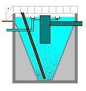
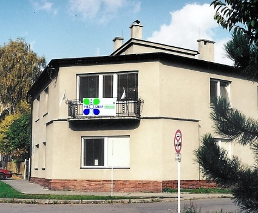

Technologie rozhoduje: Kompletní řešení pro čistírny odpadních vod a úpravny vod
EKOPROGRES HRANICE a.s. zajišťuje komplexní technologické dodávky vodohospodářských investičních celků. Vyrábíme osvědčené sedimentační nádrže, čistírny KOMBIBLOK®, strojně stírané česle a certifikované těsnění prostupů stavebními konstrukcemi LINK-SEAL®.

EKOPROGRES HRANICE a.s.
Sídlo společnosti je v Hranicích, ve městě s dlouholetou tradicí ve výstavbě vodovodů, armatur a čerpací techniky.
Komplexní vodohospodářské dodávky
Zajišťujeme kompletní technologické vystrojení čistíren odpadních vod, čerpacích stanic a úpraven vody včetně montáže a zprovoznění.
Atypické stroje a sedimentace
Vyrábíme speciální stroje ověřené dlouhodobým provozem – sedimentační nádrže, stírací mosty a mechanicky stírané česle pro čerpací kanály.
Dlouhá životnost a servis
Díky robustnímu nerezovému provedení a antikorozní ochraně pracují naše technologie spolehlivě v nepřetržitém provozu desítky let.
Výrobní program vodohospodářských zařízení
Filtrujte kategorie zařízení nebo vyhledejte konkrétní technologii kliknutím na příslušnou kartu.

Horizontální a radiální sedimentační nádrže
Celá řada typů nádrží pro čištění vody na čistírnách odpadních vod s pojezdovými stíracími mosty.

Kompaktní čistírna KOMBIBLOK®
Plně integrovaný biologický stupeň s jemnobublinnou aerací a separací kalu pro obce a průmysl.

Strojně stírané česle typu SH
Zachycení plovoucích a sunutých látek v přítokových kanálech čistíren vod a malých vodních elektráren.

Modulární těsnění LINK-SEAL®
Trvalé elastické utěsnění kruhových prostupů potrubí stavebními konstrukcemi proti tlakové vodě a plynu.

Pojezdové stírací mosty a lapáky
Odstraňování usazeného písku a plovoucích nečistot s centrálním nebo obvodovým pohonem.

Kontejnerové a atypické čistírny vod
Kompaktní řešení v prefabrikovaných či mobilních kontejnerech pro rekreační areály a průmyslové zóny.
Kalkulátor kapacity čistírny (EO)
Zvolte předpokládaný počet ekvivalentních obyvatel a typ objektu – kalkulátor vám doporučí optimální technologickou sestavu.
Originální modulární těsnění LINK-SEAL®
Špičkové těsnění prostupů technologického potrubí stavebními konstrukcemi čistíren, nádrží a armaturních komor.
Hydrostatický tlak až 50 m
Pryžové elastomerové bloky stlačované nerezovými šrouby garantují absolutní vodotěsnost a plynotěsnost prostupu.
TLumí vibrace a hluk
Elastické uložení izoluje chvění od čerpadel a kompresorů, čímž chrání stavební konstrukce před praskáním.
Materiálové varianty
EPDM pro pitnou a odpadní vodu, Nitril pro ropné látky a silikonové směsi pro vysoké teploty až do 200 °C.
Kontaktní a poptávkové centrum
Odborníci z EKOPROGRES HRANICE a.s. vám pomohou s projektem, studií proveditelnosti i dodávkou technologie.
EKOPROGRES HRANICE a.s.
Třída 1. máje 1013
753 01 Hranice I - Město
Česká republika
Přímé kontakty
Nezávazná technologická poptávka
Vyplňte základní údaje k záměru, zpracujeme technický návrh.